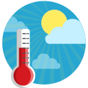

The Site Purpose
The target audience of Source Weather are people who love outsides and need information about the weather.
The target audience usually gets into our site on mobile devices. Our target audience are in average age between 15 to 60 years old.
Because they are active involved in daily activities like schools, work , sports and outdoors also because they use smart phones at high late.
Web Logo
Domain Name
Currentweathersite.org